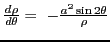
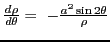

Next: Examples Up: Simple applications of the Previous: Angle between the radius Contents Index
Draw a line NT through the origin perpendicular to the radius vector of the point P on the curve. If PT is the tangent and PN the normal to the curve at P, then6.8
In the triangle OPT, . Therefore
Solution. Differentiating the equation of the curve as an implicit
function with respect to  ,
or,
,
.
,
or,
,
.
Substituting in (6.16) and (6.17), we get
david joyner 2008-08-11